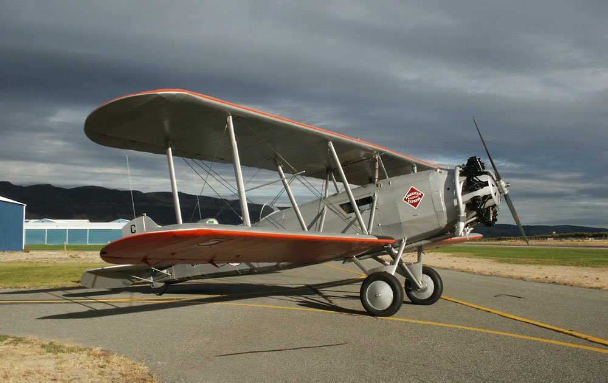
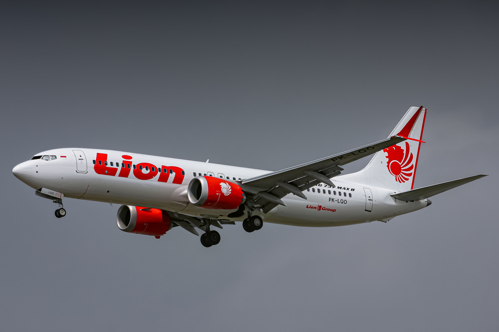

About the aircraft manufacturer Boeing
"A leading global aerospace company and top U.S. exporter, Boeing develops, manufactures and services commercial airplanes, defense products and space systems for customers in more than 150 countries. Our U.S. and global workforce and supplier base drive innovation, economic opportunity, sustainability and community impact. Boeing is committed to fostering a culture based on our core values of safety, quality and integrity" (Boeing, n.d.).

The founding of Boeing (1916)
in the year 1916 william boeing founded as what started as the Pacific Aero products company in 1916... William E boeing was a a weaththy entrepenour who was fond of airplanes and aviation after seeing one in 1910 he decided to manufacture planes of his own by buying the heath shipyard which would eventually become main HQ of manufacturing when boeing purchased a birdcage plane that crashed and when he realized that parts for another plane would not come in a long time he deecided to build a plane in the time span in this boat manufacturing yard and he pitched this idea to his friend george conrad westervelt a US navy enginner and they worked on an aircraft design they eventually came up with the B&W seaplane on june 16 1916 the first B&W seaplane was completed and flew for the first time seeing an opportunity with many resorces william boeing officially founded the pacific aero products company which would later be changed to Boeing on april 26 1917 ("History of Boeing," n.d.)

The Boeing Model 40
the boeing model; 40 was the first passenger aircraft to be built and manufactured by boeing that was certified to carry passengers and mail with a total capacity of only 2 passengers. powered by the Pratt & Whitney Hornet (525 hp) max. with a max Cruise Speed of 169 km/h and with a max range of Range 1.046 km, 565 NM, and 605mi (Palt, n.d.) this plane was quite a feat for its time
The Birth of Airbus (1970)
"On 28 October 1972, the world’s first twin engined widebody commercial aircraft, the A300B1 development aircraft, MSN 1, bearing the registration F-WUAB, performed its maiden flight in Toulouse at the Le-Bouget airshow. (Airbus, 2022) ." Airbus was founded in 1970 as a joint venture between european aerospace companies. The wings of the first A300 were produced in the UK, the fuselage in Germany and the cockpit in France, and assembled in Toulouse, France. On December 18, 1970, Airbus Industrie was created as Grouping of Economic Interest under French law (GIE, Groupement d?intérêt Economique) gathering the European industrial partners of the programme SNIAS short for (Société nationale industrielle aérospatiale), Deutsche Airbus, Hawker-Siddeley and VFW-Fokker.(Airbus, 2009, para 5)
to combat the A300, Boeing developed the 767 and 757 aircraft. The 767 was a widebody twinjet that could carry between 181 and 375 passengers, depending on the model. The 757 was a narrowbody twinjet that could carry between 200 and 295 passengers, depending on the model. Both aircraft were designed to be more fuel-efficient than the A300, and they were also more versatile, with the ability to operate from shorter runways. The 767 and 757 were both successful aircraft, and they helped Boeing to maintain its position as a leading aircraft manufacturer.`
The aquisistion of McDonnell Douglas (1997)
the merger was announced on December 1, 1996. One of the main goals with this merger was to lessen the competition in the us market or to even create a monopoly on aircraft or commerial aircraft markets (Federal Trade Commission, 1997) .On August 1, 1997 with the european Commission approving the 13 to 15 billion dollar merger. the acquisition of McDonnell Douglas was officially in order, and new operations commenced under the being name on August 4th 1997 each Mc donald douglas share holder got 1.3 times the amount of stoks thay had with mc donald douglas with boeing. (The Boeing Company, 1997)

The 737 MAX Grounding Epidemic
following lion air flight 610 which happened on October 9, 2018 and etheopian airlines flight 302 which happened on march 10, 2019. the FAA even tually found out that both crashes were from the same system failing . The MCAS system was the main cause of both crashes. the MCAS system or the Maneuvering Characteristics Augmentation System was intened to push the nose of the plane down in high angle of attack situations against the will of the pilot to prevent stalls , however, the system had a flaw that would cause it to get innacurate readings from the angle of attack sensors and would cause the plane to violently pitch the nose down toward the ground. this caused both planes to crash killing all passengers and crew on board. following these crashes, the 737 MAX was grounded worldwide and boeing faced many lawsuits and investigations into their practices and safety protocols. the 737 grounding epidemic hugely impacted many things for boeing such as the companys reputation, future aircraft orders and its economics, which included the grounding of the max 8 and the max 9 series the first of its grounding was "Multiple tests of software for failure conditions were conducted after Boeing submitted a new software architecture that relied on the simultaneous use of two Flight Control Computers. Initial testing was completed in November 2019, and the final evaluation was completed on August 13, 2020." (Federal Aviation Administration, 2020)a august 23 was the day the new redesigned software of the 737 MAX was sucessfully tested. an on december 9, 2020 GOL lineas Aereas operated the first scheduled passeneger flight since the grounding of the MAX family
The Current location of boeing Headquarters
Boeings current headquarters is located at 929 Long Bridge Drive, Arlington, VA. Crystal City, right next to DCA (Ronald Reagan National Airport) since 2022. "This facility houses the company's executive leadership and is the central point for its corporate operations. The strategic placement in the Washington, D.C. metropolitan area facilitates engagement with government officials and various industry stakeholders." (Clayton, 2021)
Main passenger aircraft
Boeing 717 family
Boeing 727 family
Boeing 737 family
